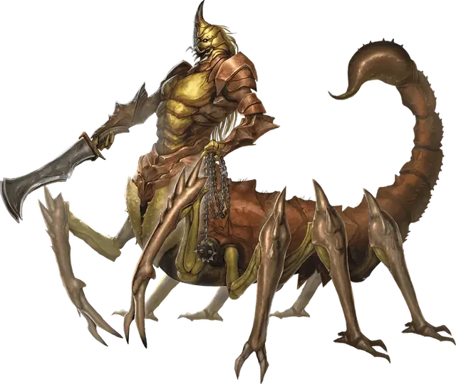

Тлинкалли
Tlincalli
Большой Монстр, нейтрально-злой

Класс Доспеха 15 (природный доспех)
Хиты 85 (10к10 + 30)
Скорость 40 футов
| мод | спас | ||
|---|---|---|---|
| СИЛ | 16 | +3 | +3 |
| ЛОВ | 13 | +1 | +1 |
| ТЕЛ | 16 | +3 | +3 |
| мод | спас | ||
|---|---|---|---|
| ИНТ | 8 | −1 | −1 |
| МДР | 12 | +1 | +1 |
| ХАР | 8 | −1 | −1 |
Навыки Восприятие +4, Выживание +4, Скрытность +4
Чувства тёмное зрение 60 футов, пассивное Восприятие 13
Языки Язык Тлинкалли
Опасность 5 (1800 опыта)
Бонус мастерства +3
Среда обитания Пустыня
Действия
Мультиатака. Тлинкалли совершает две атаки: одну длинным мечом или шипованной цепью, и одну жалом.
Длинный меч. . Рукопашная атака оружием: +6 к попаданию, досягаемость 5 футов, одна цель. Попадание: 7 (1к8 + 3) рубящего урона или 8 (1к10 + 3) рубящего урона при использовании двумя руками.
Шипованная цепь. . Рукопашная атака оружием: +6 к попаданию, досягаемость 10 футов, одна цель. Попадание: 6 (1к6 + 3) колющего урона и цель схвачена (Сл высвобождения 11) если это Большое существо или меньше. До конца захвата цель опутана и тлинкалли не может использовать шипованную цепь на другую цель.
Жало. . Рукопашная атака оружием: +6 к попаданию, досягаемость 5 футов, одно существо. Попадание: 6 (1к6 + 3) колющего урона плюс 14 (4к6) урона ядом и цель должна преуспеть в спасброске Телосложения Сл 14 или стать отравленной на 1 минуту. Если цель проваливает спасбросок на 5 или больше, то она ещё и парализована пока отравлена. Цель может повторять спасбросок в конце каждого своего хода и окончить эффект на себе при успехе.
Описание
Панцири тлинкалли покрыты ядом, который может можно собрать и сварить, не теряя парализующие силы, и повторно использовать алхимиками. Требуется тщательное обращение.
– Эльминстер
Тлинкалли, которых ещё называют люди–скорпионы, – это покрытые хитином существа, которые от талии и выше имеют тело гуманоида, а нижняя часть у них как у огромного скорпиона, включая жало на конце длинного хвоста.
Пустынные кочевники. Тлинкалли живут неприхотливо. Они бродят по засушливым землям, охотясь на рассвете и на закате. В промежутках между они пережидают дневную жару и ночной холод, зарываясь в сыпучий песок или землю, либо, если местность этого не позволяют, таясь в руинах или неглубоких пещерах. Племя тлинкалли остается на одном месте только до тех пор, пока в непосредственных окрестностях имеется добыча, хотя в своих странствиях они могут приходить в одни и те же места снова и снова. Племя также на время оседает, когда приходит время отложить яйца и дождаться вылупления нового выводка.
Ядовитые яйца. Тлинкалл откладывают яйца в теплое место вне прямых солнечных лучей, часто среди поросли кактусов вблизи их нынешней стоянки. Яйца защищены толстой скорлупой, покрытой паралитическим ядом типа того, что у них на жалах. Потенциальный хищник, который посмеет расколоть яйцо, будет беззащитен перед тлинкалли, которые придут проверить, в чем дело.
Ужасные похитители. Тлинкалли съедают то, что убивают, но когда у них появляются новые рты, они также начинают брать добычу живьем. Использовав свои жала, чтобы парализовать жертву, и шипованные цепи, чтобы связать её, тлинкалли притаскивают таких пленников в свое стойбище и привязывают к кактусу или камням. Там жертвы дожидаются, пока не сядет солнце и нововылупившийся молодняк выйдет из логова, чтобы съесть их живьем.
Гордые охотники. Тлинкалли считают себя великими охотниками. Если племя тлинкалли встречает более могущественного охотника, такого, как синий дракон, вождь племени должен решить, станет ли племя повиноваться более умелому охотнику, просто пройдет дальше, или будет сражаться насмерть, чтобы одолеть его.
Оружие и предметы из подручных материалов. Тлинкалли нецивилизованные, и не строят городов, не шьют одежду и не добывают металлы. Вместо этого они подбирают то, что им нужно, или что они хотят. При этом они тем не менее знают, как расплавить найденный металл и выковать грубое оружие и инструменты.